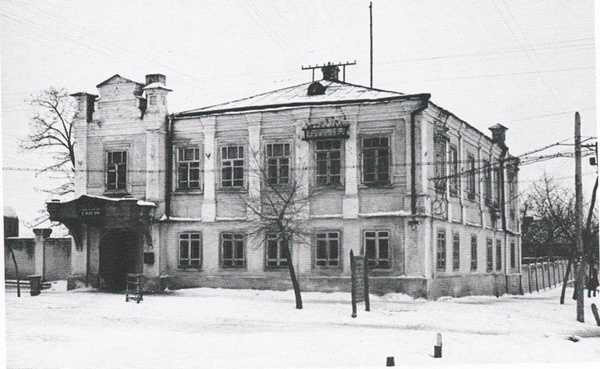
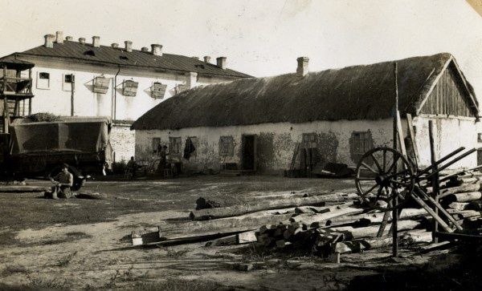
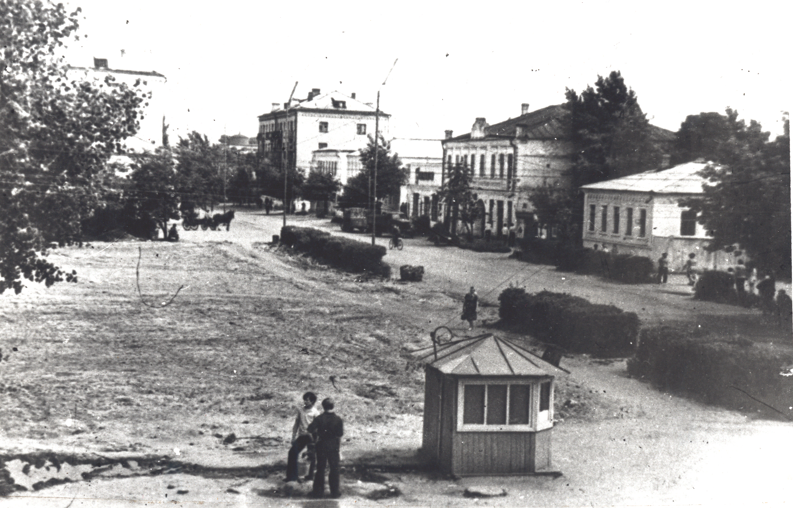
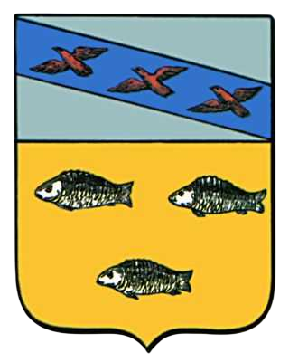
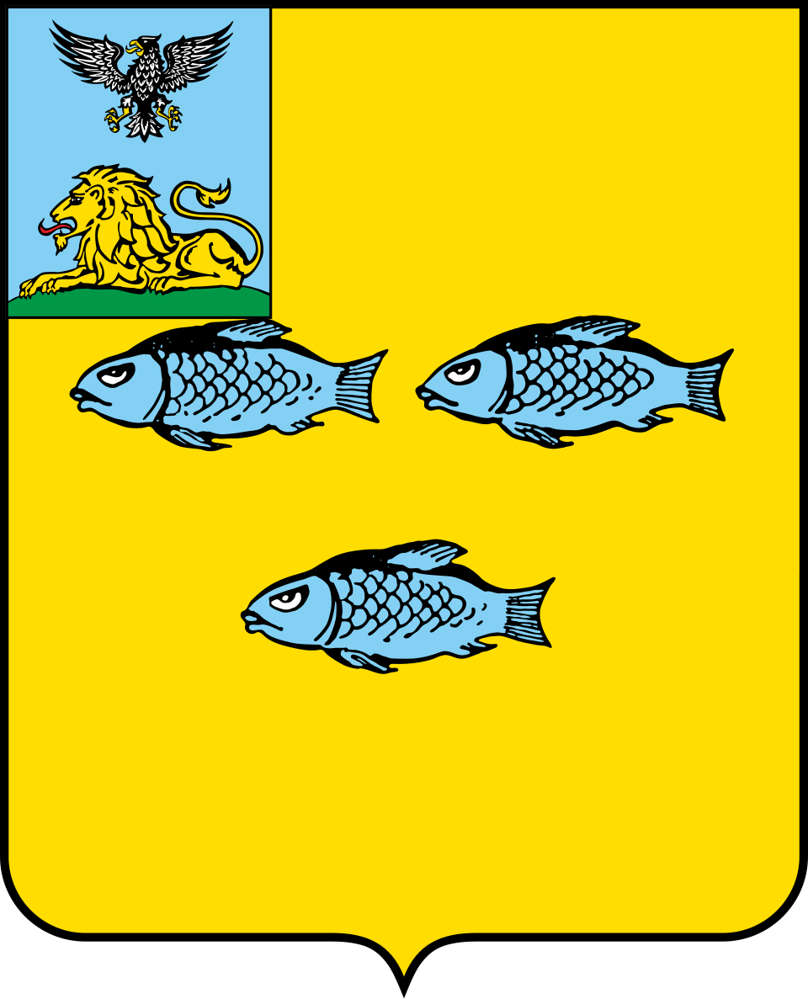
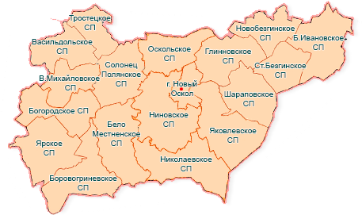
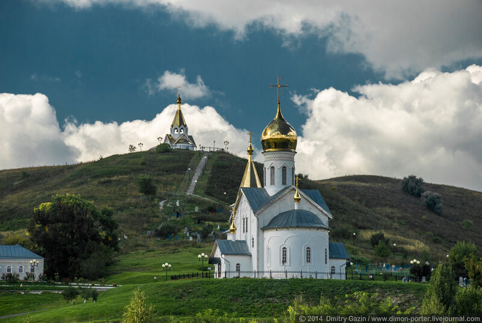
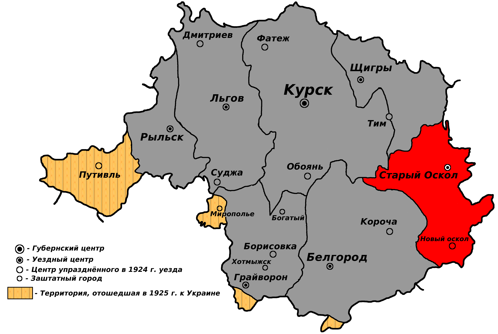
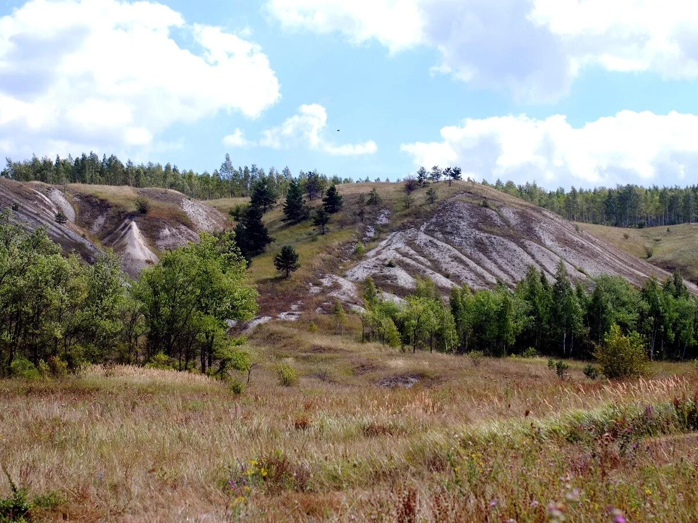

История г. Новый Оскол



Основан в 1637 г. как «стоялый острог» с засекой. В 1647 году стал городом под названием Царёв-Алексеев, который в 1655 году был переименован в Новый Оскол. В 1708 году город был приписан к Белгородской провинции Киевской губернии, в 1779 году назначен уездным городом Курского наместничества, переименованного в 1797 году в Курскую губернию.
С 20 октября 1721 года по 1 сентября (ст.ст.) 1917 года в составе Российской империи.
С 1 сентября по 25 октября (ст.ст.) 1917 года в составе Российской республики. Далее началась Гражданская война в России 1918–1923 годов.
С декабря 1922 года в составе Российской Советской Федеративной Социалистической Республики Союза Советских Социалистических Республик.
С образованием Центрально-Чернозёмной области (ЦЧО) в её составе 30 июля 1928 года совместным постановлением ВЦИК и СНК РСФСР № 99 был образован Новооскольский район, который при разделе в 1934 году ЦЧО на Воронежскую и Курскую области был включён в состав Курской области.
3 июля 1942 года советские органы и войска оставили город, оккупирован германскими войсками.
28 января 1943 года освобождён от гитлеровских германских войск советскими войсками Воронежского фронта в ходе наступления на белгородском направлении.
18-го стрелкового корпуса (генерал-майор Зыков Пётр Максимович) в составе: 219-й сд (генерал-майор Котельников Василий Петрович), 270-й сд (подполковник Полятков Николай Дмитриевич), 1-й истребительной дивизии (полковой комиссар Беляев Иван Петрович) в составе: 2-й истребительной бригады (полковник Лубман Борис Владимирович), 6-й истребительной бригады (полковник Буслаев Иван Ефимович).
6 января 1954 года Новооскольский район с городом районного подчинения Новым Осколом был включён в состав новообразованной Белгородской области.


Официально герб утверждён 8 января 1780 года. Он представлял собой геральдический щит французской формы, в верхней части которого располагался герб Курской губернии, а в нижней на золотом поле были изображены три большие серебряные рыбы: две и одна. Они символизировали пресноводную рыбу вырезуба, которая отличается несколько загнутой мордой, большим и широким хвостовым плавником, небольшими глазами, чрезвычайно крепкими глоточными костями и зубами. Данная рыба была внесена в герб Нового Оскола, потому что водилась она именно в реке Оскол, на берегу которой расположен город, а «в других реках нигде не находилась».
Современный герб города, являющийся одновременно символикой всего Новооскольского района, был утверждён постановлением главы районной администрации от 11 сентября 1995 года № 382 и зарегистрирован в Государственном геральдическом регистре Российской Федерации за № 117. Он повторяет герб 1780 года, за немногими исключениями: в верхней части герб Курской губернии заменён гербом Белгородской области (расположен в правом верхнем углу), а в нижней части щита помещено более стилизованное, современное изображение рыб, которые в старом гербе походили в большей степени на кистепёрых рыб.
История Новооскольского района

Новооскольский район образован Постановлением ВЦИК и СНК РСФСР №99 от 30 июля 1928 года.
Значение Царева – Алексеева (Новый Оскол) в оборонительном отношении усиливалось. Сюда потекли беженцы и переселенцы, приобретались земли представителями крупных дворянских родов: Голицыными, Волконскими, Бутурлиными, Долгорукими, Шереметьевыми. Выросли целые слободы: Великомихайловская, Серебрянская, Слоновская.
Новооскольский уезд складывался постепенно. Через 8 лет после основания город получил новое название – Новый Оскол. К концу XVIII века он постепенно утратил свое воинское значение, а с 1779 года стал уездным городом Курской губернии с населением 1484 человека. 8 января 1780 года императрицей Екатериной II был утвержден герб города Новый Оскол. На гербе нашего города три большие рыбы – вырезуб. Только в водах реки Оскол ловилась эта редкая рыба.

Земля была основным средством существования. В начале XVIII века появились отдельные отрасли производства: ремесла, промыслы, торговля.
Новооскольская земля во время красных революционных лет стала родиной Первой Конной армии. В 1919 году был подписан приказ №1 об организационном оформлении Первой Конной армии. Ее командующим был назначен С. М. Буденный.

После гражданской войны началось промышленное строительство и преобразования на селе. В 1929 году появились первые коллективные хозяйства, организованы машинно – тракторные станции в городе и некоторых селах. В 1935 году открывается техникум механизации сельского хозяйства – настоящая кузница кадров для села до сих пор. В годы первых пятилеток проводится реконструкция и механизация предприятий, ширится стахановское движение и социалистическое соревнование. К 1931 году в районе создано 120 колхозов.
Все изменил 1941 год. Время оккупации (с 3 июля 1942 года по 28 января 1943 года) стало разрушительным для города, затем еще семь месяцев район был прифронтовым: разрушена железнодорожная станция, предприятия и жилые дома, магазины, городской кинотеатр. Городскому и районному хозяйству был нанесен убыток на несколько десятков миллионов рублей. Невозможно измерить цену жизни 9383 новооскольцев, погибших в годы войны. Новооскольская земля вырастила и воспитала 12 Героев Советского Союза.
Весной 1943 года была проведена первая посевная, к осени дала электроток городская электростанция, и в 1948 году район достиг довоенного уровня производства.

Начиная с 50-х годов, непрерывно наращиваются темпы преобразований нашего края: дает первую продукцию мясокомбинат, реконструируется мебельная фабрика, работает «Сельхозтехника», мелькомбинат, кирпичный завод. Появляются первые пятиэтажки, строятся школы и детские дома, лечебные учреждения. В 70–80 годы построен Великомихайловский сырзавод, завод железобетонных конструкций, бройлерная фабрика – одна из крупнейших в то время в стране. В районе 5 Героев Социалистического труда.
В современных условиях администрация Новооскольского района стремится к тому чтобы приумножить то, что было сделано ранее, повысить экономический потенциал города и района, сделать жизнь людей достойной и обеспеченной, а Новый Оскол – дорогим и любимым местом для всех новооскольцев, где бы они ни работали и ни жили.